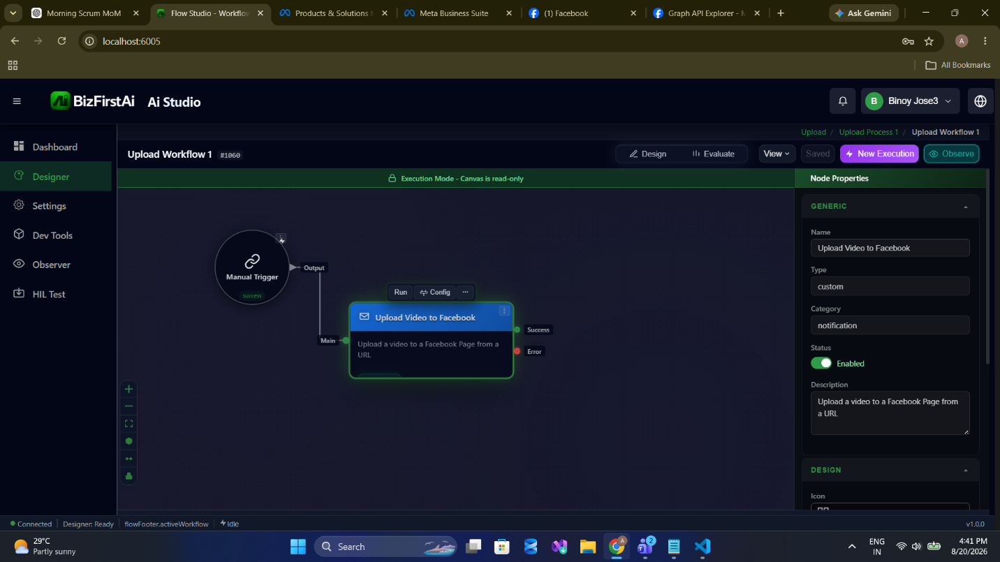
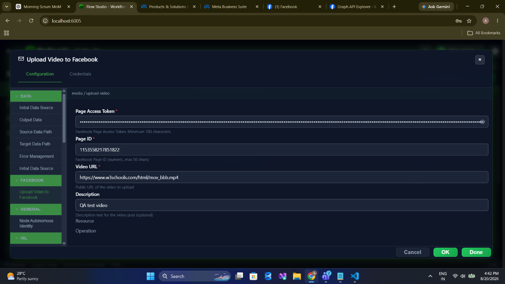
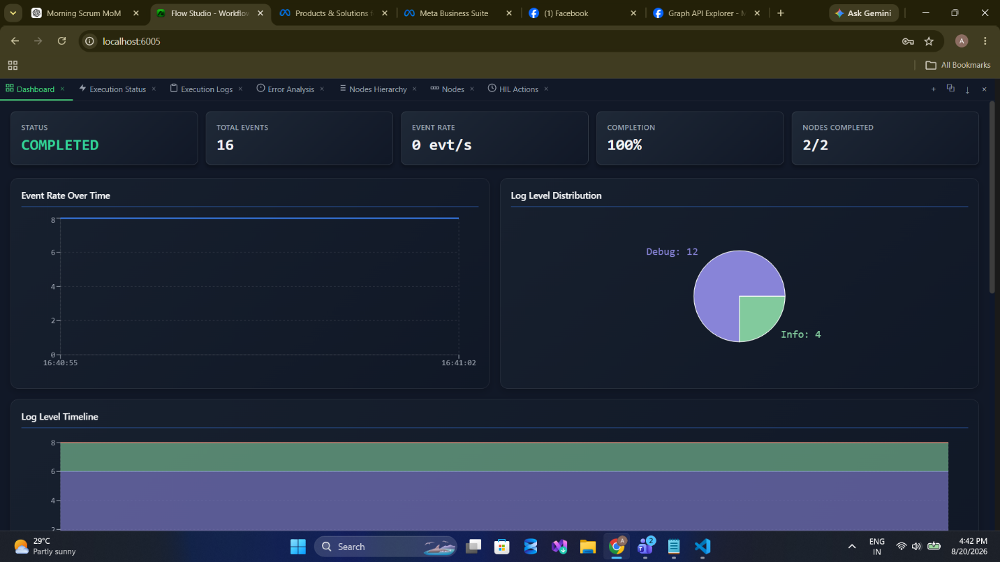
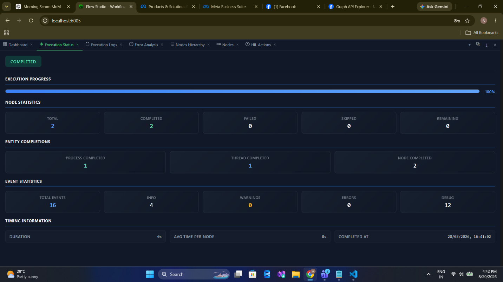
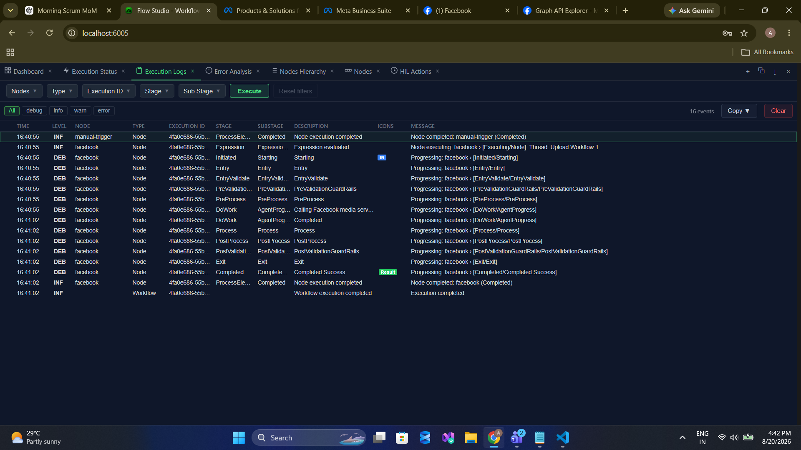
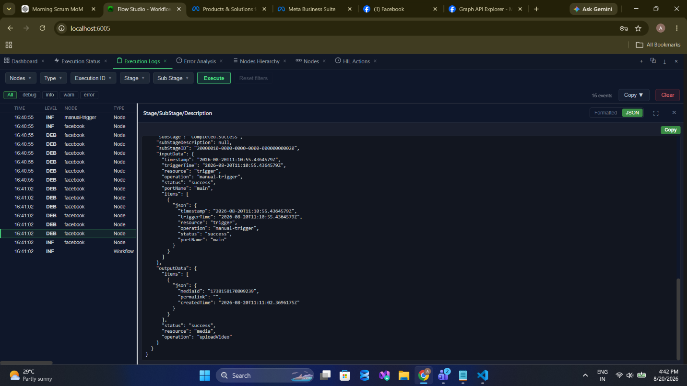
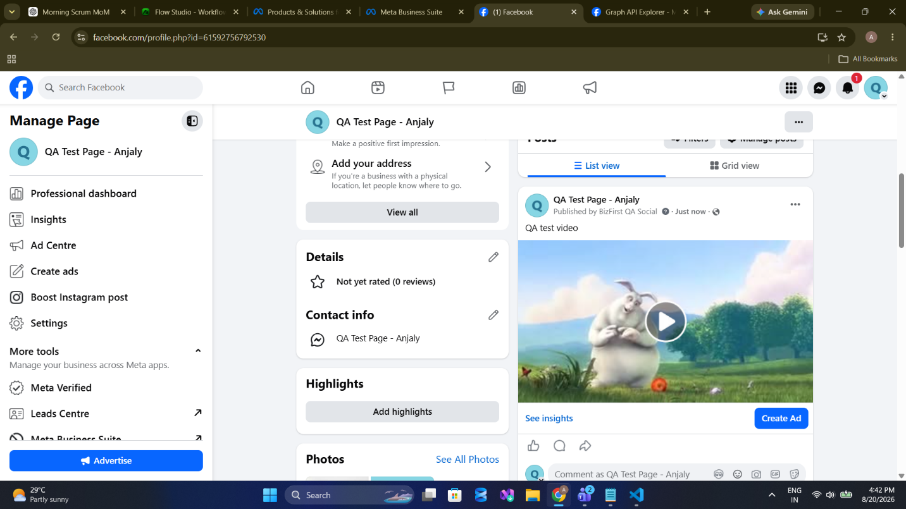

media/uploadVideo
Publish a video to a Facebook Page from a publicly reachable URL. Asynchronous — success means accepted, not live.
Palette name: Upload Video to Facebook · Graph call:
POST /{pageId}/videos · Permissions: pages_manage_posts · Field reference: Media Operations
Success means accepted, not live. Video publishing is asynchronous. A success port carrying a
mediaId tells you Facebook took the video — encoding happens afterwards and can still fail. Do not treat this node's success as confirmation that the video is visible on the Page.
When to Use
- Scheduled video releases from a content pipeline that has already staged the file publicly.
- Cross-posting a video published elsewhere, driven by a webhook from the source platform.
- Automated recaps — a rendered highlight or summary video published on a cadence.
- Approval-gated video publishing, where the render URL is held until a reviewer signs off.
Walkthrough
1Place the node

2Configure

media / upload-video. The field is Video URL — config key videoUrl — even though the underlying Graph field is file_url. Copying a raw Graph example into the node will not work.3Run



4Read the output

mediaId, an empty permalink, and a locally generated createdTime.5Verify on the Page

Configuration
| Field | Required | Description |
|---|---|---|
resource | Required | Must be media. |
operation | Required | Must be uploadVideo. |
pageAccessToken | Required | Page access token, or a stored credential. |
pageId | Required | Numeric Page ID, at most 50 characters. |
videoUrl | Required | Publicly reachable absolute URL of the video file. |
description | Optional | Text shown with the video post. Limited to 1,024 characters — the caption limit, not the post limit. |
Sample Configuration
{
"resource": "media",
"operation": "uploadVideo",
"credentialID": 4021,
"pageId": "1153558217851822",
"videoUrl": "https://www.w3schools.com/html/mov_bbb.mp4",
"description": "QA test video"
}Output
| Field | Type | Description |
|---|---|---|
status | string | "success" — meaning accepted, not published. |
items[0].mediaId | string | New video object ID. Use it to poll publish status. |
items[0].permalink | string | Always empty. Reserved in the contract; not produced by the node. |
items[0].createdTime | string | ISO-8601 timestamp generated by the node when the call was accepted. |
{
"status": "success",
"resource": "media",
"operation": "uploadVideo",
"items": [
{
"mediaId": "1730310170089230",
"permalink": "",
"createdTime": "2026-08-20T11:31:02.3696175Z"
}
]
}Confirming the Video Went Live
The node has no status-polling operation. Add a Delay followed by an HTTP Request node against the video object:
GET https://graph.facebook.com/v25.0/{{ $output.uploadVideo.items[0].mediaId }}?fields=status
Authorization: Bearer <page access token>The response's status.video_status reports ready, processing, or error. Loop with a Delay until it settles, and branch on the result.
Validation
| Message | Cause |
|---|---|
Invalid access token | Token blank or shorter than 100 characters. |
Invalid page ID | pageId blank or longer than 50 characters. |
Invalid video URL | videoUrl is blank or not a well-formed absolute URI. Format check only — reachability is not tested. |
Description exceeds maximum length of 1024 | Description too long. |
Notes and Cautions
- The config key is
videoUrl, the Graph field isfile_url. This asymmetry catches people who copy a Graph API example directly. - The 120-second timeout applies to the request, not the encode. It bounds how long the node waits for Facebook to accept the upload. Encoding continues on Facebook's side afterwards.
- Retries can double-publish. A request that times out may still have been accepted. Check the Page before re-running, and prefer to poll by
mediaIdrather than retry blindly. - URL-based only. No binary or attachment upload path exists — stage the file on a public host first.
- Description uses the caption limit. 1,024 characters, not the 63,206 that applies to a text post.
Related
- media/uploadImage — the photo equivalent, which publishes synchronously
- Roadmap — binary upload and publish-status polling
- Troubleshooting — when Facebook cannot fetch the file